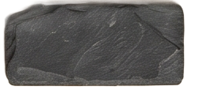
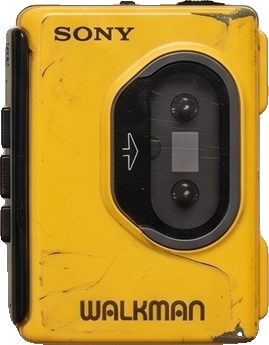
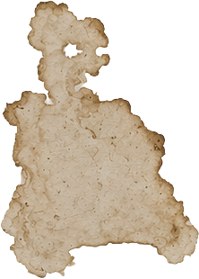
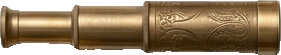
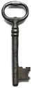
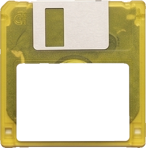
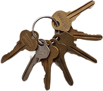
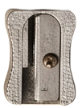

Flip Colors
function setColor(name) {
body.style.backgroundColor = name;
}
function randomColor() {
// Generate extremely bright HSL colors
let H = Math.round(Math.random() * 360);
let S = Math.round(92 + Math.random() * 8);
let L = Math.round(74 + Math.random() * 14);
theColor = `hsl(${H}, ${S}%, ${L}%)`;
body.style.backgroundColor = theColor;
body.style.color = "black";
}

Le code prend le body de la page. Il le met en fond magenta avec setColor("magenta"). La fonction randomColor prépare 3 valeurs HSL : la teinte (H de 0 à 360°), la saturation élevée (S de 90 à 100%) et la luminosité (L de 58 à 70%) pour garantir des teintes éclatantes qui « poppent ». Ensemble, elles forment une couleur HSL vibrante au hasard. Le texte reste noir pour garantir une lisibilité optimale sur ce fond lumineux.